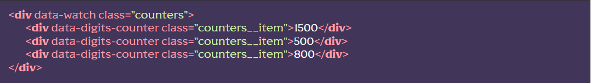
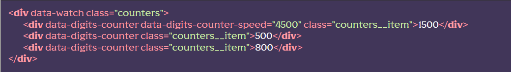
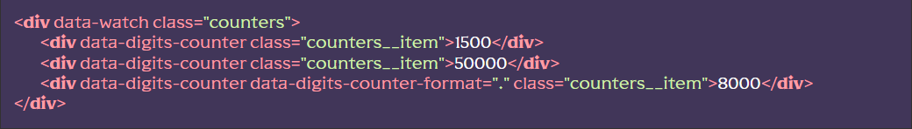

Підключення модуля
[HTML]Пишемо HTML-структуру лічильника(ів), та додаємо атрибут data-digits-counter до кожного з них. В середені тегу-лічильника має бути тільки число:
[JS] У файлі js/app.js розкоментовуємо рядок flsScroll.digitsCounter();
(!) Модуль потребує підключення модуля спостерігача. Тож треба підключити його та додати атрибут data-watch батьківському елементу з лічильниками:
Додаткові можливості
Зміна швидкості
Для зміни швидкості анімації необхідно додати атрибут data-digits-counter-speed до елементу лічильника та вказати швидкість у мілісекундах (1000 за замовченням)
Форматування
Існує можливість форматування виводу цифр відділяючи тисячі сотрі тисяч і т.д. Для цього необхідно додати атрибут data-digits-counter-format до елементу лічильника. Для налаштування розмежувача можно додати символ у якості значення атрибуту (за замовченням пробіл)
